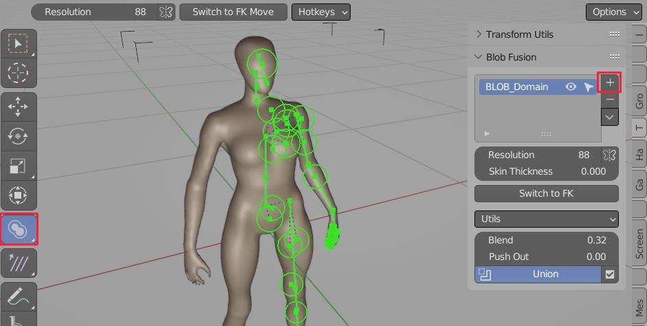

Functionality¶
How To use¶
 Blob Fusion Panel is located in 'Tools' Tab (right sidebar)
Blobs are visible only inside Blob Domain object. To add domain volume:
- Go to right sidebar (N) -> Tools Tab -> Blob Fusion Panel -> Click [+] icon (Add Blob Domain)
Workspace Tool will be automatically switched to 'Blob Fusion' - this overrides some hotkeys to the ones listed below
Hotkeys¶
| Hotkey | Function |
|---|---|
| Shift+A | Add Menu Blob - this will be first thing you will want to use |
| E | Extrude |
| Shift+D | Duplicate Blob(s) |
| F | Connect |
| W | Subdivide segment |
| Ctrl + MMB Scroll | Select adjacent Blobs |
| P | Rip/Separate Selected |
| Shift+G | Select Child Blobs, Select Blobs by Type |
| Alt+B | Adjust Blob Blend factor |
| Ctrl+B | Blob Parameters Popup |
| M | Toggle Mute Blob(s) |
| Alt+M | Unmute All |
| X\Del | Delete |
| Alt+S | Unify Scale - makes empty Round |
| Shift+V | Slide Empty towards adjacent Node Ending/Parent |
Duplicate, Extrude, Divide¶
- You can Duplicate or Extrude any selected Blob (sphere or capsule).
- Divide only works on Capsule Blobs
Duplicate, Extrued and Subdivide Blobs are the core commands for modeling with Blob Fusion
Free Move vs FK¶
When you create Blobs, add-on will automatically generate a child - parent relationships. It can be disabled by pressing 'Free Move Mode'
Forward Kinematics Mode vs Free Move Mode
Connect¶
You can connect two blobs together (F-key), unless they are defining Capsule Blob already
Mute Blobs¶
Use Shift+G menu to select Sphere Blobs, then M will mute them. Alt+M - unmute all
Separate Selected¶
Hands separation, can help in locally increasing model resolution
Note - You can revert this operation using Join Domain operator. It will merge hands back into body Blobs. Join is located below Separate "Selected Button"
Armature Generation¶
Hierarchical structure on Blobs can be used to generate armature from Blob Domain Objects
Blob Blending¶
Influence of Blob Blending on mesh look
Finalize Blob¶
Finalize will create mesh copy of active Blob Domain, that can be used for sculpting